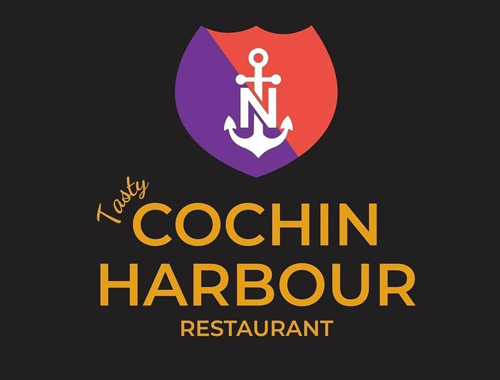
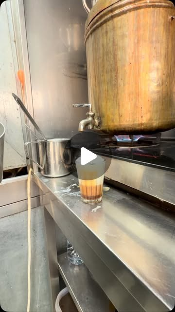

Prepared for Tasty Cochin Harbour Restaurant10 October 2026

xFusion Creative
Marketing audit
Your own Instagram account has not posted since 18 July.
The 7 own posts in our latest pull of your grid have a median of 7 likes on 499 followers, and your last post on your own account is from 18 July. A food account's June reel about your Chattichoru drew 10 likes. We read your website and your Instagram, and set them against what has worked for restaurants we work with. This is what we found, the videos we would make and how to take bookings direct.
A Kerala kitchen with plenty to film, and a feed that has gone quiet.
Tasty Cochin Harbour serves Kerala food in Al Karama, Dubai: rice and curry, seafood, meat, kanji and kappa, and chai. You have 131 posts. Your last post on your own account is from 18 July. The food is there to film. The feed needs a plan.
499
Instagram followers, from 131 posts
7
median likes on the 7 own posts in our grid pull
22
likes on your 14 July chai reel, your most-liked recent post
18 July
last post on your own account
What is already strong, and worth building on
Kerala dishes on your website menu: rice and curry, seafood, meat, and kanji and kappa.
Chai, shown in your 14 July reel: 22 likes, your most-liked recent post.
Rice and fish, in three posts from 17 to 18 July.
A video gallery and customer reviews on the site.
A reservation form and phone numbers on the site.
You do not need a new menu or a new website first. What would move the numbers is a plan for the chai, the rice and fish and the kitchen, posted on a schedule, with a clear way to book on every post.
02 · What has worked for places like yours
Real people, in the venue, doing something worth watching.
Results from video we have made for other businesses. Each one gives people a reason to watch and a reason to visit.
70M
views on one reel for a Greek restaurant in Newcastle
3.5M
views on one reel for a Whitley Bay restaurant
+40%
weekly sales for that Greek restaurant, in the owner's own words
A reason beats a nice shot. A dish on its own is a picture. The same dish with a question, a challenge or a story gives people a reason to watch.
The kitchen is the set. Your chai counter, your kitchen and your dining room are already on camera. A licensed UAE crew would film them on purpose.
It is planned, not luck. We pick the mix of formats for your menu and your week before any filming.
View counts from our own client dashboard, checked 10 October 2026. Sales figure from the owner's own review.
03 · Your website
A website with a booking form, and not much else to book with.
The site has a menu, a gallery, customer reviews, a video page and a reservation form. These are the changes we would make so visitors book in one step.
What we saw
Why it matters
Fix
The reservation form is the only booking route on the site
"Book A Table" is the one way to reserve online. We found no WhatsApp link on the homepage or the video page we checked.
Add a WhatsApp button next to the form, on every page.
The homepage embeds nine videos
When we requested each video file from the server, all nine returned video data. We have not called any of them broken.
Check every video on the page in a browser, and link each new Instagram video from it.
No online ordering link on the site
We found no online ordering link on the homepage or the video page we checked. A customer who orders through a third-party app may never see your site or your Instagram, and we have not confirmed which apps you use.
Print the Instagram and booking links on takeaway packaging and in the order confirmation.
04 · Your social channels
A food account has posted about your restaurant. Your own feed has gone quiet.
499
Instagram followers, from 131 posts
7
median likes on the 7 own posts in our grid pull
22
likes on your chai reel of 14 July, your most-liked recent post
10
likes on a food account's June reel about your Chattichoru
You have posted 131 times. The pattern in your recent posts:
A food account posted about the restaurant. @menudealzz published a public reel captioned "Chattichoru at Tasty Cochin Harbour" on 12 June. It drew 10 likes, and your own account did not post it.
Your most-liked recent post is a person making tea. The 14 July chai reel drew 22 likes, against 6 to 17 for your other posts from April to July. People watch the making of a thing.
The gap is the problem. No post of your own since 18 July. A feed that goes quiet loses the people who were starting to follow it.
What this means. Your kitchen gives people something to watch. Short, regular video of the chai, the rice and fish and the kitchen, posted on a plan, is how the feed closes the gap.
Source: instagram.com/cochinharbour.ae public profile and posts, and the public @menudealzz post, checked 10 October 2026.
05 · Your numbers
Your own numbers, from your public profile.
These are the figures from your public Instagram profile and the public posts, checked on 10 October 2026.
Business
Instagram
What gets attention
Most-liked recent post
Tasty Cochin Harbour Al Karama
499
Chai, rice and fish, seafood
22 likes, 14 July
What the numbers say
Your most-liked recent post is the chai reel. It drew 22 likes, against a median of 7 across the 7 own posts in our grid pull.
A food account posted about the restaurant. A public reel from @menudealzz, dated 12 June 2026, drew 10 likes. Your own account did not post it.
Sources: public Instagram profile of @cochinharbour.ae and its posts, and the public @menudealzz post, checked 10 October 2026.
06 · What is working in your market
What is already working on your own feed.
One reel from your own account. The common thread is food in motion, and a person making it.

Your most-liked recent postYour chai reel, 14 July: 22 likes. The making of a cup.
1
The kitchen is the set
The chai counter, the steel pots and the kitchen are already on camera. A licensed UAE crew would film them on purpose.
2
Food being made
Short clips of a dish being made and served, the format that drew your most-liked recent post.
3
A reason to book this week
Each video ends on one line that points to the booking route: a table, an order or a call.
07 · Twelve videos we would make
Twelve ideas built from your kitchen, your chai and your regulars.
Each idea uses something already on your menu or in your room. Six bring people in this week, and six grow the account.
Videos that bring people in
6 concepts
Skit
The chai counter
"Ask the man at the counter. He knows the story of every cup."
A customer orders chai and the man at the counter tells a short story while he pours.
Why: gives people a reason to walk in for one cup.
Challenge
Mild to fiery
"Order the spice level your friend would never try."
Two regulars try the mildest and the spiciest curry at one table, filmed in the dining room.
Why: people tag the friend who would win.
Local
First time with Kerala food
"First time with Kerala food? Here is what to order."
A first-timer is walked through the menu while the server explains each dish, from the rice and curry to the kanji and kappa.
Why: turns a menu people may not know into an easy first order.
Skit
Ask the cook
"Chef, what is the one thing people always get wrong?"
A short question and answer with the cook at the stove, then a cut to the finished dish.
Why: shows the person behind the food.
How to book
Book in one screen
"Weekend plans, sorted in one screen."
A screen recording of the reservation form and the phone number, shown step by step.
Why: removes the step where people give up.
Dish
Rice and fish
"Rice and fish, the way Malayalis have it at home."
Rice and fish served on a plate, with close shots of the fish being portioned.
Why: a dish your own posts already show, filmed as a proper short.
Organic that builds the audience
6 concepts
Series
Morning chai
"Before the rush, this is the first pot of the day."
A weekly series that starts at the counter and follows the first hour of service.
Why: a series people come back for.
Family
Meet the cook
"Meet the cook behind the counter."
Short portraits of the kitchen team, with their permission, in their own words.
Why: people follow people, not menus.
Language
Malayalam, then English
"Malayalam captions, and English for everyone else."
Keep your Malayalam captions and add English subtitles, so the reel reaches Dubai beyond the Kerala community.
Why: your audience is wider than the people who speak the language.
Sunday
Sunday sadya
"Sunday lunch, the Kerala way."
A full table filling up with dishes, start to finish.
Why: shows a whole meal in one clip.
Creators
A food account visit
"We will ask a food account to order the whole menu."
Invite a Dubai food creator to a booked table and have the visit filmed on both accounts.
Why: a food account has already posted about the restaurant, so a planned visit builds on that.
Guests
Why we come back
"Why do you keep coming back here?"
Short answers from regulars at the table, filmed on the way out.
Why: the guests say it, not the menu.
08 · Your bookings, direct
How customers book and order today, and what taking more of it direct would change.
Customers book through your reservation form or by phone. Talabat is a delivery platform with a published commission figure we can cite. We have not confirmed whether you list on Talabat, Zomato or any other app, so this section does not rely on any listing.
17 to 18%
average Talabat commission on restaurant orders, across its markets
0
online ordering links on the homepage and video page we checked
1
reservation form on your website
Talabat's average commission on restaurant orders is 17% to 18%, group-wide across its markets. Source: FAB Securities note on Talabat's 1Q25 earnings call, 13 May 2025. This is a platform figure, not a figure for your restaurant.
Delivery apps are an easy route for a first order, if you use one. What they do not do is bring people back to you. A direct route, with the booking form, a WhatsApp button and an order link, keeps the customer and the margin in your own hands.
What a site with a clear booking and enquiry flow would change is simple: the people who already follow your account could book or order in one tap, without going through a listing first.
09 · The plan
A plan built around your kitchen, start to finish.
Week 1
Plan and set up
A call to pick the twelve videos, add a WhatsApp button and the booking link to the site.
Week 2
The shoot day
A licensed UAE crew would film the chai counter, a rice and curry service and the kitchen in one day, to our shot list.
After the shoot
Edit and deliver
We edit and caption the full batch of short videos, add English subtitles and hand you every file. You keep every video.
Posting on a plan
The videos go out
The videos go out on a schedule on Instagram, with the booking route in each caption.
Results review
Review together
We report what the videos reached and what came through the booking route, and we look at what to film if you want more.
What the shoot gives you: a full batch of short videos, filmed in your restaurant by a licensed UAE crew to our shot list, edited and captioned and ready to post. You keep every video.
10 · Who we are, and next steps
A Newcastle team that plans the videos, edits them and runs the ads.
We plan every video around what brings people in. A licensed UAE crew would film to our shot list in your venue, and we edit, caption, post and report from our studio. We measure what matters to you: covers, bookings and orders, not likes.
70M
views on one reel for a Greek restaurant in Newcastle
3.5M
views on one reel for a Whitley Bay restaurant
+40%
weekly sales for that Greek restaurant, in the owner's own words
Jay Williams and Anya Davey, the founders of Fusion Creative. I plan the videos and run the ads from Newcastle, and a licensed UAE crew would film to our shot list. I would be the person you call about the plan. Our team of editors turns every shoot day into finished videos, and a licensed UAE crew would film each one to our shot list.
Next steps
A 20 minute call to pick the videos.
Then the shoot day, built around the chai counter and a full dinner service, which a licensed UAE crew would film to our shot list.

A food account has posted about your restaurant. Your own feed has gone quiet.
You have posted 131 times. The pattern in your recent posts:
What this means. Your kitchen gives people something to watch. Short, regular video of the chai, the rice and fish and the kitchen, posted on a plan, is how the feed closes the gap.
Source: instagram.com/cochinharbour.ae public profile and posts, and the public @menudealzz post, checked 10 October 2026.